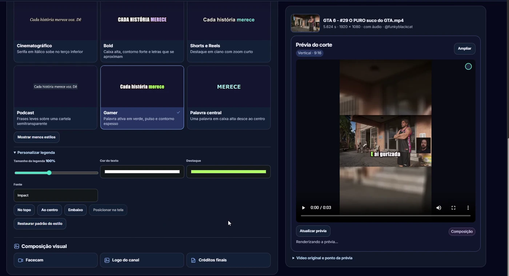
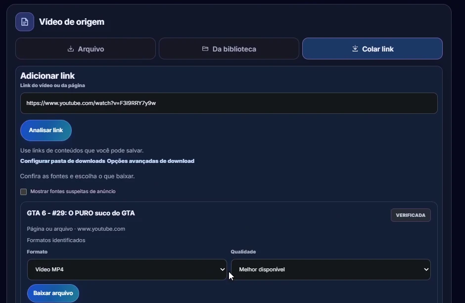
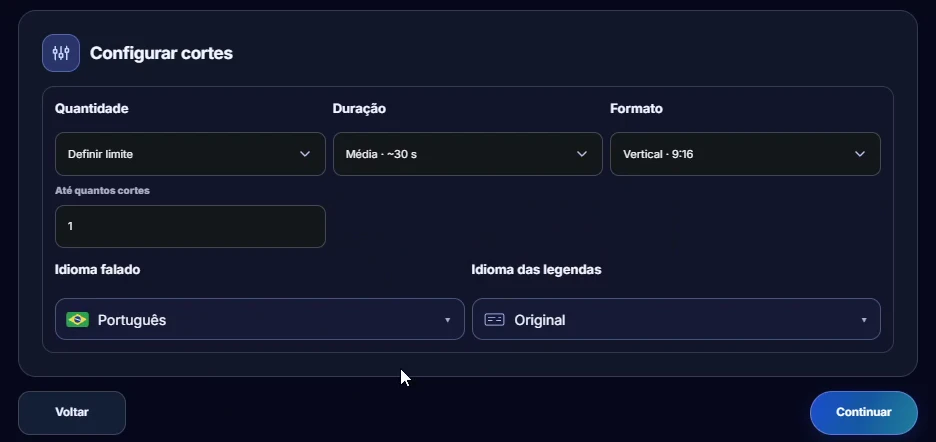
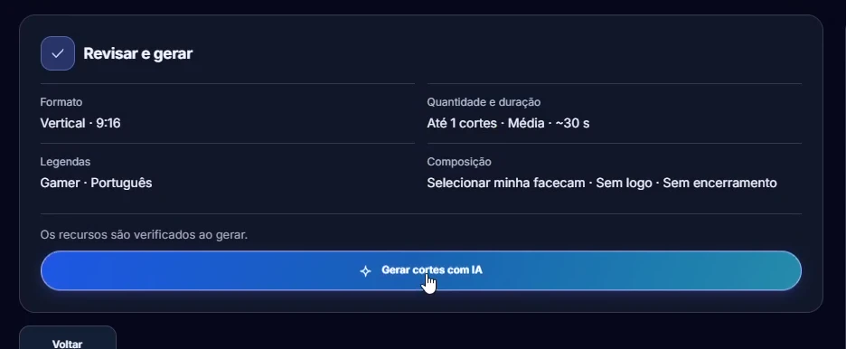
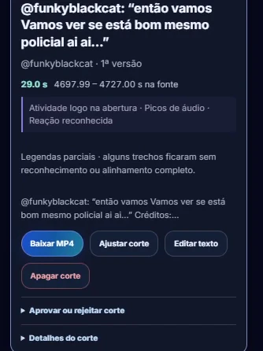

Cortes automáticos com IA
Transforme um vídeo longo em trechos mais curtos. Escolha a duração e o formato de saída.
- 9:16Vertical
- 1:1Quadrado
- 16:9Horizontal
Estúdio de vídeo para Windows
Importe um vídeo, gere cortes automáticos e personalize as legendas.
 SharpClips AI
Aparência do corte
SharpClips AI
Aparência do corte

Recursos
Transforme um vídeo longo em trechos mais curtos. Escolha a duração e o formato de saída.
Cole um link no programa, escolha entre os formatos disponíveis e baixe o vídeo para a biblioteca. Use vídeos que você tem permissão para salvar.
Transcreva vídeos inteiros, visualize os estilos e exporte as legendas em SRT ou VTT.
Enquadre a facecam nos cortes verticais e adicione o logo do canal ou créditos finais.
Ajuste o corte, edite título e descrição e baixe o vídeo final em MP4.
Tutorial interativo
Avance pelas telas reais do SharpClips AI, da importação até o vídeo pronto.
Etapa 1 de 5

Etapa 2 de 5

Etapa 3 de 5
Etapa 4 de 5

Etapa 5 de 5

Estúdio de Legendas
Escolha um estilo para ver a animação na hora. No SharpClips AI, você pode ajustar a fonte, o tamanho, as cores e a posição.
Palavra ativa em verde, com pulso e contorno espesso.
A palavra falada ganha destaque em amarelo.
Texto serifado em itálico no terço inferior.
Halo pulsante e destaque violeta por palavra.
Destaque em ciano com um zoom curto.
Frases sobre uma cartela semitransparente.
O SharpClips AI traduz as legendas por frase usando um modelo local do Ollama. Configure o modelo na Central de IA.
Exemplo de tradução
Demonstração narrada
Download para Windows
Instalador 4.2.9 para Windows de 64 bits. O arquivo inicial tem cerca de 14 MB.
Baixar instaladorIA local — o perfil Leve usa o Whisper Base na CPU. A seleção manual desse modelo verifica 1.500 MiB de RAM livre. A aceleração CUDA exige GPU NVIDIA compatível.